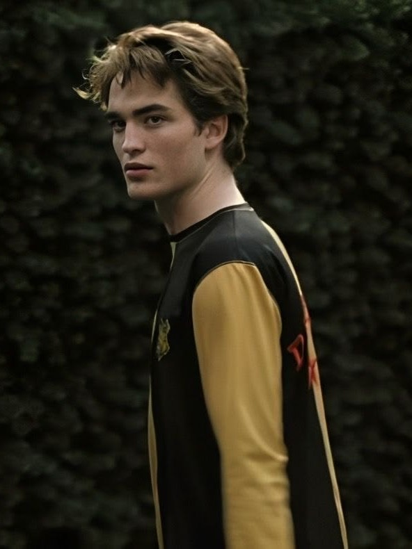
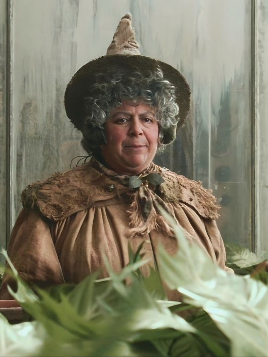
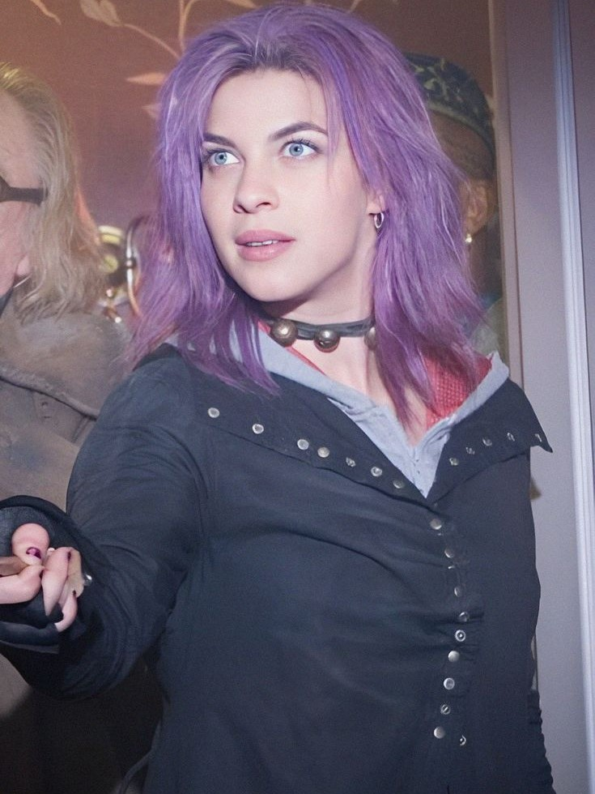
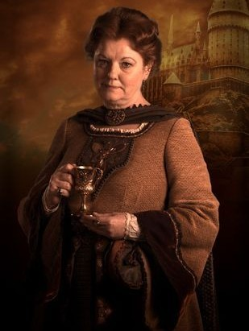
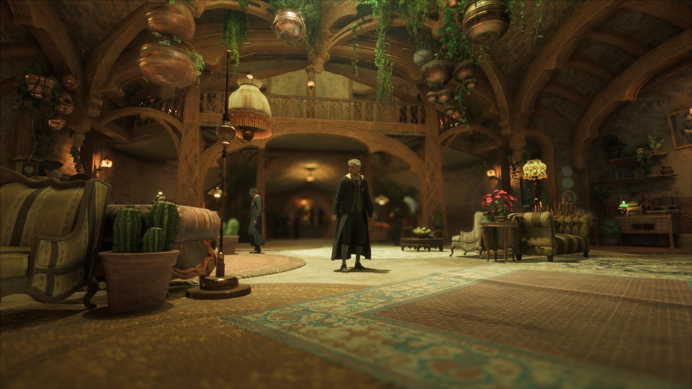

"Quem sabe é na Lufa-Lufa que você vai morar, Onde seus moradores são justos e leais Pacientes, sinceros, sem medo da dor." — O Chapéu Seletor

Diretora da Casa
Pomona Sprout

Fundadora
Helga Hufflepuff

Cores
Amarelo e preto
Os alunos da Lufa-Lufa são conhecidos por seus traços de personalidade que refletem os valores da casa. Eles são dedicados, amigáveis, leais, honestos e imparciais. A casa valoriza o trabalho árduo, a paciência e o jogo limpo, e os Lufanos são frequentemente descritos como modestos e não competitivos.
Membros Notáveis
Cedrico Diggory

Pomona Sprout

Ninfadora Tonks

Helga Hufflepuff

Sala Comunal
O ambiente em si possui um teto baixo e é descrito como terroso, acolhedor e ensolarado. Há várias cortinas amarelas, cobre podido e sofás e poltronas estofadas em amarelo e preto. Suas janelas arredondadas fornecem vista ao gramado ondulado da escola e a dentes-de-leão. Uma grande lareira na cor de mel entalhada com texugos também pode ser encontrada, juntamente com um retrato da fundadora da casa, Helga Lufa-Lufa.
